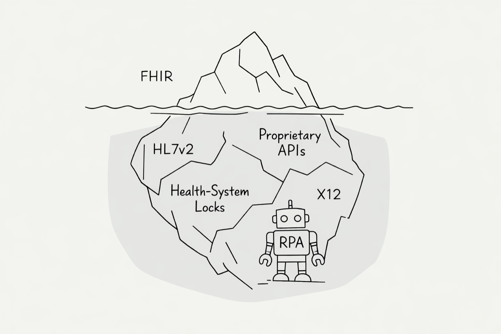

on ehr integration and its pitfalls
A practical breakdown of what it actually takes to plug into electronic health records
If you're building healthcare software, you will eventually need to read and write data from an EHR. On paper, modern EHRs expose FHIR APIs and integration should be straightforward. In practice, it's one of the most underestimated engineering lifts in health tech.
These are my notes on navigating the landscape, written for engineers and founders who are just getting started.
step 1: map the data flow
Before touching a single API, meticulously map out every piece of data your application needs. What FHIR resources are you reading? What are you writing back? What entities flow through each step of your workflow?
The more you lock in your data flow early, the easier every conversation with health systems, vendors, and compliance teams will be down the line. This is the foundation everything else sits on.
know your client's EHR composition
The EHR market is more consolidated than you'd expect at the top, but there's a long tail of mini-EHRs, especially in organizations that don't depend on CMS reimbursement. Tools like Definitive Healthcare let you see what EHRs are in use across practice types in your target market. Do this research before writing code.
the (ideal) development process
Modern EHRs all run FHIR APIs. If you build for one, you've built for most. The ideal starting point is an open-source headless EHR like Medplum. Build your integration against its FHIR APIs first. Once it works there, you can adapt to the major commercial EHRs with relatively little friction.
Developer sandbox access is available within days for all the major players. If you built around Medplum's FHIR surface, iteration is fast.
going live on the big EHRs
Epic has no centralized developer gate. Each health system maintains its own instance and its own IT and infosec department. You deal with each one individually. Epic does provide a sandbox for testing, but the per-site deployment overhead is real.
Athena is single-instance, multi-tenant cloud. You go through Athena directly and demonstrate your app's utility. If you pass and land on the Athena Marketplace, your software drops into any Athena setup nationwide. Higher upfront cost, but marginal deployment cost approaches zero.
eClinicalWorks is cloud-hosted with FHIR APIs accessible to third parties. Deeper integrations require a provider partner to advocate on your behalf. Most other major EHRs follow a similar pattern.
if only it was that simple
You might look at the above and think it's manageable. It's not.
Legacy EHRs. Some niche systems don't expose FHIR at all. You end up doing RPA-style workarounds with AI agents to extract and push data. It's a headache.
Per-customer variance. Even within a single EHR, customers can have wildly different integration mandates. Some Epic orgs are API-first, making FHIR plug-and-play. Others maintain sprawling legacy stacks over HL7 and X12 and will resist an API-based integration. Their restrictions will encumber your work.
Proprietary endpoints. Some EHRs layer proprietary APIs on top of or alongside FHIR. You're no longer writing to a standard.
Workflow demands beyond REST. Your workflow might need push notifications via SSE, bulk data exports, or real-time event streams. Suddenly you're supporting a matrix of integration types, protocols, and edge cases.
This is the iceberg. The FHIR API is the tip above water. Below it sits the sprawl of integration permutations that compounds with every new client.
integration platforms
There are two tiers of help available:
Integration tooling helps you set up connections but does not provide pre-built connectivity. You still need to learn the data formats, handle integration types, and manage each EHR's capabilities yourself.
Managed service offerings smooth out the integration with individual EHRs and health systems. They operate a standardized model so you can develop against one interface. Vendors like Redox, NexHealth, and MI7 fall here. For large-scale data extraction workflows, there's Ellkay and Healthjump.
so what's the strategy?
The combination of requirements beyond simple HTTP FHIR requests and the fragmented adoption landscape for legacy and niche EHRs makes doing it all yourself an enormous lift.
Even if you plan to use a vendor, the process outlined above still matters. You need to know your data flow, exactly what you read and write from the EHR, and what your clients are running today.
My approach: rely on a managed vendor solution unless you have a very concentrated customer base on one or two EHRs. Regardless, the mid-to-long term plan should be to procedurally bring integrations in-house until the vendor dependency shrinks to zero.